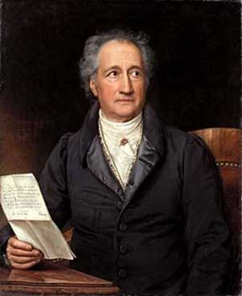
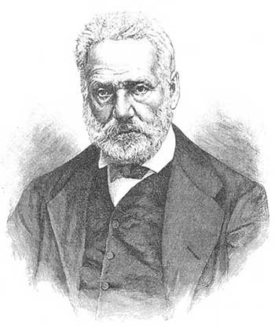

Герман Гессе
 Обладатель пожалуй самого отточенного и красивого литературного стиля. Читать Гессе для меня это как пить шикарное старое вино, или слушать любимую группу в хороших наушниках, или скатывать на горных лыжах по балдёжному пухляку во время снегопада. Можно сказать, что книги этого человека в полной мере показывают могущество и красоту немецкого языка. Насколько я знаю, была введена даже премия его имени, вручающаяся за самое красивое повествование и стиль в книгах.
Обладатель пожалуй самого отточенного и красивого литературного стиля. Читать Гессе для меня это как пить шикарное старое вино, или слушать любимую группу в хороших наушниках, или скатывать на горных лыжах по балдёжному пухляку во время снегопада. Можно сказать, что книги этого человека в полной мере показывают могущество и красоту немецкого языка. Насколько я знаю, была введена даже премия его имени, вручающаяся за самое красивое повествование и стиль в книгах.
Так или иначе, Герман Гессе был художником, поэтом, предельно открытым человеком (что уже прекрасно и редко), гуманистом и пацифистом, открыто выступал против обеих мировых войн. Он видел людские пороки, социальные проблемы, глубокую неправильность направления, в котором движется человечество, но при этом был более чем восприимчив к красоте мира, к гармонии природы и вселенной. Как часто бывает, на стыке этих двух противоположных чувств и родилось его творчество. Подпитывалось это мудростью востока: его дед долгое время жил в Индии, его мать родилась там. Герман воспитывался на симбиозе христианства, буддизма и даосизма.
Степной Волк: книга о скитаниях и поисках пути чувственного, но закрытого одиночки, не находящего себе места в этом новом мире 20-ых годов 20 века. В течение книги главному герою помогают, он открывается, и понимает что к чему. Настоятельно советую начать знакомство с Гессе через это произведение.
Сиддхартха: история Будды. По сути, вольное изложение биографии Будды (которого звали Сиддхартха Гаутама) - стилизованное под небольшую повесть, описание жизненного пути "того, кто проснулся". Как всегда красиво и, при этом, наполнено глубочайшего смысла. Как же иначе, ведь речь о жизни Будды :)
Игра в Бисер: ключевое и самое последнее произведение автора, над которым он работал 20 лет. Masterpiece as it is. Если тебе понравятся предыдущие книги Германа, прочти эту.
Игра в Бисер (1943)
УСТУПКА
Для тех, которым все от века ясно,
Недоуменья наши – праздный бред.
Двухмерен мир, – твердят они в ответ,
А думать иначе небезопасно.Ведь если мы допустим на минуту,
Что за поверхностью зияют бездны,
Возможно ль будет доверять уюту,
И будут ли укрытья нам полезны?
А потому для пресеченья трений
Откажемся от лишних измерений!
Коль скоро менторы судили честно,
И все, что ждет нас, наперед известно,
То третье измеренье неуместно.”
Лишь тот, кто вечно в путь готов пуститься,
Выигрывает бодрость и свободу.
Иоганн Вольфганг фон Гёте - Фауст
Образчик потрясающей живости и глубины немецкого языка, кульминация немецкой поэзии. Книга о вечной неудовлетворённости человеческого гения, о скитаниях и сомнениях души, о терзающем нас дуализме. Главный герой - полулегендарный персонаж европейской истории XV века, учёный Фауст, уставший от жизни. Его душа ставится на кон пари между Господом и демоном Мефистофелем; последний должен склонить Фауста к греху и тем самым забрать его душу. На протяжении книги учёный вместе с демоном познает реальный мир, от которого он был отделён стенами книг всю свою жизнь, а заодно и себя: Гёте через Фауста совершает своего рода путешествие в дикое и древнее бессознательное. Говоря словами Карла Юнга, "Фауст отважился опуститься в мрачный хаос исторической психе и погрузился в непрерывно изменяющуюся неприглядную сторону жизни, поднявшуюся из этого кипящего котла."
Это эмоционально сильное и под завязку насыщенное смыслами и идеями, алхимией и символизмом, пропитанное европейским мистицизмом поэтическое творение. Сам я планирую перечитать Фауста в будущем: как удовольствия ради, так и в силу ощущения, что извлеку из этого источника ещё многое.
Фауст (1832)
Тебе, педанту, значит, нужен чек
И веры не внушает человек?
Но если клятвы для тебя неважны,
Как можешь думать ты, что клок бумажный,
Пустого обязательства клочок,
Удержит жизни бешеный поток?
Наоборот, средь этой быстрины
Еще лишь чувство долга только свято.
Сознание того, что мы должны,
Толкает нас на жертвы и затраты.
Что значит перед этим власть чернил?
Меня смешит, что слову нет кредита,
А письменности призрак неприкрытый
Всех тиранией буквы подчинил”
Виктор Гюго
Гюго продирает до глубины души.
Это во-первых - мастерский стиль и глубочайшее внимание к деталям: тем самым, читая и понимая его, ты учишь себя формулировать мысли так же ясно, полно и красиво. Он будто бы специально доводит каждое предложение до своей финальной, самой насыщенной формы, тем самым бросая вызов представлениям о том, как полно можно пользоваться языком. Так как это проза, в книгах Гюго отсутствуют нужные сокращения и модификации ради рифмы, но это не лишает его язык поэтичности.
Во-вторых, Виктор ведёт повествование максимально медленно: для каждого события дан обширный культурный и исторический контекст, для каждого персонажа - его бэкграунд, особенности его характера и его личная история. В силу этого, читая, например, Отверженных, я ближе познакомился с французской культурой, с их складом ума, но ещё и с их историей - причём весьма плотно. Гюго описывает годы перед революцией, саму её, и последствия её так скрупулёзно и живо, что это далеко превосходит любые учебники истории. При этом, стиль и живописность позволяют тебе практическ>и ощутить брусчатку Парижских улиц и запах пороха на баррикадах, или же почувствовать комья земли, летящие тебе в лицо от разорвавшихся неподалеку артиллерийских залпов английской армии при сражении у Ватерлоо.
В третьих, Гюго синтезирует стиль и историчность письма в сюжете (имею в виду Отверженных), эмоциональность и переплетенность которого превосходит Войну и Мир. Это красочная, берущая за душу история, которая не отпускает до самого конца и не раз вызывает вскрики радости или слёзы. Пожалуй, я не читал ничего, настолько же грустного и эмоционально сильного.
Кроме Отверженных, рекомендую "Человек, который смеется". Она гораздо короче, и про Англию, но уровень абсолютно тот же.
Отверженные (1862)
Видеть тысячу предметов в первый и последний раз — что может быть печальнее этого и вместе с тем глубже!
Путешествовать — значит рождаться и умирать каждую секунду.
Такой человек бесспорно был бы достоин того, чтобы вовсе не иметь политических убеждений. Да не поймут превратно нашу мысль, – мы не смешиваем так называемые «политические убеждения» с возвышенным стремлением к прогрессу, с высокой верой в отечество, в народ и в человека, которая в наши дни должна лежать в основе мировоззрения всякого благородного мыслящего существа.